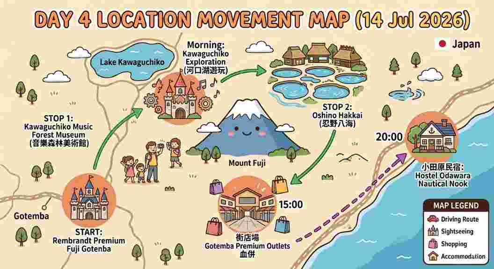

簡介：充滿歐洲阿爾卑斯山風情的童話莊園！園區內有華麗的自動演奏風琴、世界最大的音樂盒，以及美麗的玫瑰花園，非常適合帶小朋友來拍照，體驗如童話公主與王子的奇幻音樂世界。
📞 電話：0555-20-4111
🚗 自駕時間預估：從 Rembrandt Premium Fuji Gotenba 出發，行經東富士五湖道路，車程約 40 ~ 50 分鐘。
繁體中文官網 🎨 打開 Google Map 🗺️簡介：富士山融雪流經地下所形成的八個清澈湧泉。池水乾淨得像鏡子一樣，可以看到優游的巨型魚類。現場還有傳統茅草屋與傳統草餅，可以帶小朋友來品嚐甘甜的富士山泉水！
📞 電話：0555-84-4222
🚗 自駕時間預估：從音樂森林美術館開車前往忍野八海，車程約 20 ~ 25 分鐘。
打開 Google Map 🗺️日本最受歡迎的巨型 Outlets，擁有無敵的富士山景觀！這裡不只有豐富的大人精品，還有超大的兒童服飾與玩具專區（如樂高、三麗鷗、寶可夢周邊商品），商場內設有兒童遊樂場設施，全家大小都能逛得超滿足！
📞 電話：50-1721-1028
御殿場官方網站 🛒 打開 Outlets Google Map 🗺️目的地：Hostel Odawara Nautical Nook
地址：3 Chome-1-16 Hamacho, Odawara, Kanagawa 250-0004, Japan